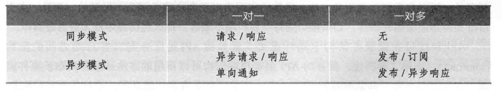
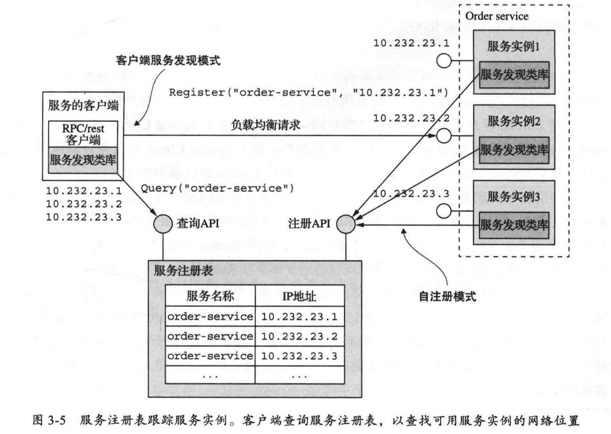
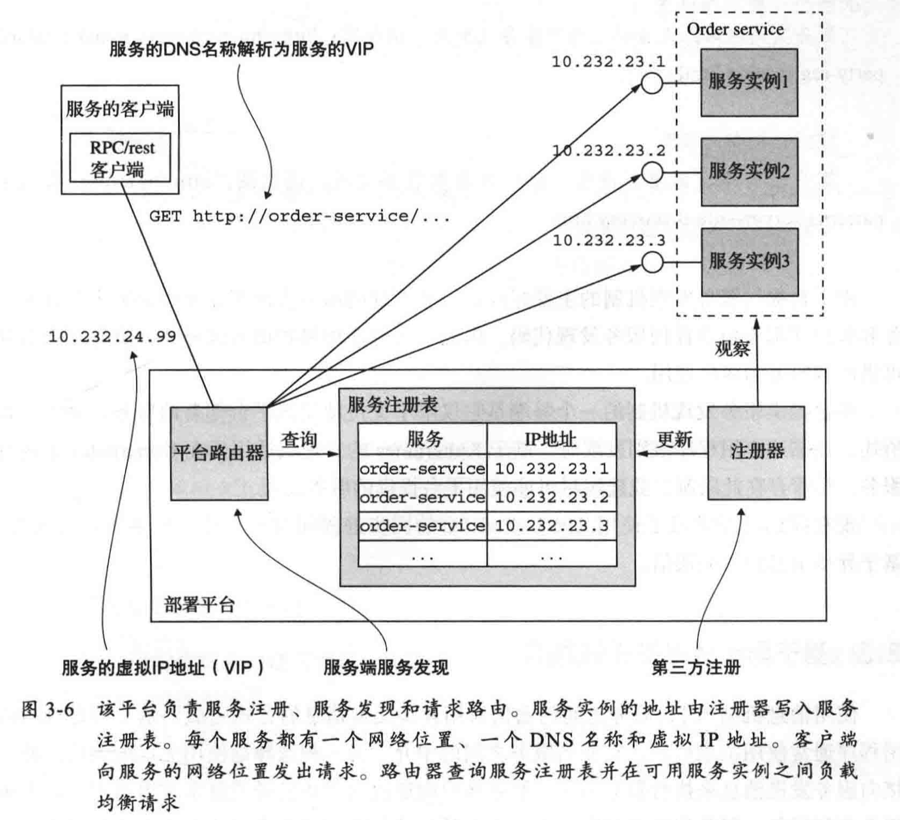
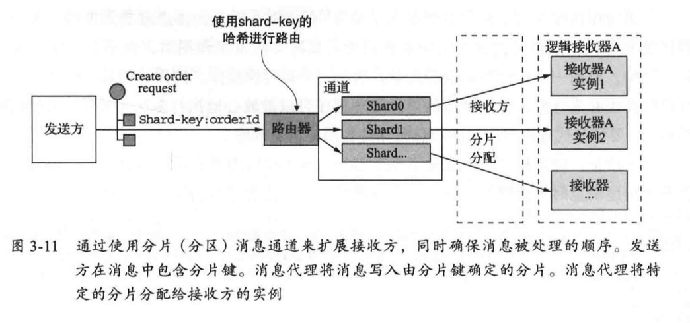

一个理想的微服务架构应该是在内部由松散耦合的若干服务组成，这些服务使用异步消息相互通信。REST 等同步协议主要用于服务与外部其他应用程序的通信。
考虑交互方式将有助于你专注于需求，并避免陷人特定进程间通信技术的细节。
交互方式的选择会影响应用程序的可用性，交互方式还可以帮助你选择更合适的集成测试策略。
有多种客户端与服务的交互方式
它们可以分为两个维度。
第一个维度关注的是一对一和一对多：
- 一对一：每个客户端请求由一个服务实例来处理。
- 一对多：每个客户端请求由多个服务实例来处理。
一对一的交互方式有以下几种类型：
- 请求/响应：一个客户端向服务端发起请求，等待响应；客户端期望服务端很快就会发送响应。
- 在一个基于线程的应用中，等待过程可能造成线程阻塞。这样的方式会导致服务的紧耦合。
- 异步请求/响应：客户端发送请求到服务端，服务端异步响应请求。
- 客户端在等待响应时不会阻塞线程，因为服务端的响应不会马上就返回。
- 单向通知：客户端的请求发送到服务端，但是并不期望服务端做出任何响应。
一对多的交互方式有以下几种类型：
- 发布 / 订阅方式：客户端发布通知消息，被零个或者多个感兴趣的服务订阅。
- 发布 / 异步响应方式：客户端发布请求消息，然后等待从感兴趣的服务发回的响应。
第二个维度关注的是同步和异步：
- 同步模式：客户端请求需要服务端实时响应，客户端等待响应时可能导致堵塞。
- 异步模式：客户端请求不会阻塞进程，服务端的响应可以是非实时的。

一个设计良好的接口会在暴露有用功能同时隐藏实现的细节。
„„你应该努力只进行向后兼容的更改。向后兼容的更改是对 API 的附加更改或功能增强：
- 添加可选属性。
- 向响应添加属性。
- 添加新操作。
「严以律己，宽以待人」：服务应该为缺少的请求属性提供默认值；客户端应忽略任何额外的响应属性。
进程间通信的本质是交换消息。消息通常包括数据，因此一个重要的设计决策就是这些数据的格式。消息格式的选择会对进程间通信的效率、API 的可用性和可演化性产生影响。
消息的格式可以分为两大类：文本和二进制。
- 第一类是 JSON 和 XML 这样的基于文本的格式。
- 这类消息格式的好处在于，它们的可读性很高，同时也是自描述的。
- JSON 消息是命名属性的集合。
- 相似地，XML 消息也是命名属性的集合。
- 使用基于文本格式消息的弊端主要是消息往往过度冗长，特别是 XML。另外一个弊端是解析文本引入的额外开销，尤其是在消息较大的时候。
- 这类消息格式的好处在于，它们的可读性很高，同时也是自描述的。
- 有几种不同的二进制格式可供选择。常用的包括 Protocol Buffers) 和 Avro
- Protocol Buffers 使用 tagged fields(带标记的字段)，
- Avro 的消费者在解析消息之前需要知道它的格式。
- 因此，实行 API 的版本升级演进， Protocol Buffer 要优于 Avro
REST 是一种使用 HTTP 协议的进程间通信机制
- REST 中的一个关键概念是资源，它通常表示单个业务对象。
- REST 使用 HTTP 动词来操作资源，使用 URL 引用这些资源。
REST 成熟度模型
- Level 0：Level 0 层级服务的客户端只是向服务端点发起 HTTP POST 请求，进行服务调用。每个请求都指明了需要执行的操作、这个操作针对的目标（例如，业务对象） 和必要的参数。
- Level 1: Level 1 层级的服务引入了资源的概念。要执行对资源的操作，客户端需要发出指定要执行的操作和包含任何参数的 POST 请求。
- Level 2：Level 2 层级的服务使用 HTTP 动词来执行操作，譬如 GET 表示获取、 POST 表示创建、PUT 表示更新。请求查询参数和主体（如果有的话）指定操作的参数。这让服务能够借助 Web 基础设施服务，例如通过 CDN 来缓存 GET 请求。
- Level 3: Level 3 层级的服务基于 HATEOAS (Hypertext As The Engine Of Application State）原则设计，基本思想是在由 GET 请求返回的资源信息中包含链接，这些链接能够执行该资源允许的操作。例如，客户端通过订单资源中包含的链接取消某一订单，或者发送 GET 请求去获取该订单，等等。HATEOAS 的优点包括无须在客户端代码中写入硬链接的 URL。此外，由于资源信息中包含可允许操作的链接，客户端无须猜测在资源的当前状态下执行何种操作。
REST 最初没有 IDL。幸运的是，开发者社区重新发现了 RESTful API 的 IDL 价值。最流行的 REST IDL 是 Open API 规范 。
REST 好处和弊端
好处
- 它非常简单，并且大家都很熟悉。
- 可以使用浏览器扩展（比如 Postman 插件）或者 curl 之类的命令行（假设使用的是 JSON 或其他文本格式）来测试 HTTP API。
- 直接支持请求 /响应方式的通信。
- HTTP 对防火墙友好。
- 不需要中间代理，简化了系统架构。
弊端
- 它只支持请求 /响应方式的通信。
- 可能导致可用性降低。
- 由于客户端和服务直接通信而没有代理来缓冲消息，因此它们必须在 REST API 调用期间都保持在线。
- 客户端必须知道服务实例的位置（URL)。
- 这是现代应用程序中的一个重要问题。客户端必须使用所谓的服务发现机制来定位服务实例。
- 在单个请求中获取多个资源具有挑战性。
- 有时很难将多个更新操作映射到 HTTP 动词。
- 考虑 gRPC
gRPC API 由一个或多个服务和请求/响应消息定义组成。服务定义类似于 Java 接口，是强类型方法的集合。除了支持简单的请求 /响应 RPC 之外，gRPC 还支持流式 RPC。
gRPC 使用 Protocol Buffers 作为消息格式。
- Protocol Buffers 是一种高效且紧凑的二进制格式。
- 它是一种标记格式：Protocol Buffers 消息的每个字段都有编号，并且有一个类型代码。消息接收方可以提取所需的字段，并跳过它无法识别的字段。因此，gRPC 使 API 能够在保持向后兼容的同时进行变更。
gRPC 好处和弊端
好处
- 设计具有复杂更新操作的 API 非常简单。
- 它具有高效、紧凑的进程间通信机制，尤其是在交换大量消息时。
- 支持在远程过程调用和消息传递过程中使用双向流式消息方式。
- 它实现了客户端和用各种语言编写的服务端之间的互操作性。
弊端
- 与基于 REST/JSON 的 API 机制相比，JavaScript 客户端使用基于 gRPC 的 API 需要做更多的工作。
- 旧式防火墙可能不支持 HTTP/2。
服务保护自己的方法包括以下机制的组合：
- 网络超时：在等待针对请求的响应时，一定不要做成无限阻塞，而是要设定一个超时。使用超时可以保证不会一直在无响应的请求上浪费资源。
- 限制客户端向服务器发出请求的数量：把客户端能够向特定服务发起的请求设置一个上限，如果请求达到了这样的上限，很有可能发起更多的请求也无济于事，这时就应该让请求立刻失败。
- 断路器模式：监控客户端发出请求的成功和失败数量，如果失败的比例超过一定的阈值，就启动断路器，让后续的调用立刻失效。
- 如果大量的请求都以失败而告终，这说明被调服务不可用，这样即使发起更多的调用也是无济于事。在经过一定的时间后，客户端应该继续尝试，如果调用成功，则解除断路器。
- 断路器是一个远程过程调用的代理，在连续失败次数超过指定阀值后的一段时间内，这个代理会立即拒绝其他调用。
服务发现在概念上非常简单：其关键组件是服务注册表，它是包含服务实例网络位置信息的一个数据库。
服务实例启动和停止时，服务发现机制会更新服务注册表。当客户端调用服务时，服务发现机制会查询服务注册表以获取可用服务实例的列表，并将请求路由到其中一个服务实例。
实现服务发现有以下两种主要方式：
- 应用层服务发现模式：服务及其客户直接与服务注册表交互。
- 这种服务发现方法是两种模式的组合：
- 第一种模式是自注册模式。
- 自注册：服务实例向服务注册表注册自己。
- 第二种模式是客户端发现模式。
- 客户端发现：客户端从服务注册表检索可用服务实例的列表，并在它们之间进行负载平衡。
- 第一种模式是自注册模式。
- 好处：
- 可以处理多平台部署的问题
- 弊端：
- 需要为你使用的每种编程语言（可能还有框架）提供服务发现库
- 开发者负责设置和管理服务注册表，这会分散一定的精力
- 这种服务发现方法是两种模式的组合：
- 平台层服务发现模式：通过部署基础设施来处理服务发现。
- 这种方法是以下两种模式的组合：
- 第三方注册模式：由第三方负责（称为注册服务器，通常是部署平台的一部分）处理注册，而不是服务本身向服务注册表注册自己。
- 第三方注册：服务实例由第三方自动注册到服务注册表
- 服务端发现模式：客户端不再需要查询服务注册表，而是向 DNS 名称发出请求，对该 DNS 名称的请求被解析到路由器，路由器查询服务注册表并对请求进行负载均衡。
- 服务端发现：客户端向路由器发出请求，路由器负责服务发现
- 第三方注册模式：由第三方负责（称为注册服务器，通常是部署平台的一部分）处理注册，而不是服务本身向服务注册表注册自己。
- 好处：
- 服务发现的所有方面都完全由部署平台处理
- 弊端：
- 仅限于支持使用该平台部署的服务
- 这种方法是以下两种模式的组合：
服务发现示例图
应用层服务发现模式

平台层服务发现模式

有以下几种不同类型的消息：
- 文档：仅包含数据的通用消息。接收者决定如何解释它。
- 对命令式消息的回复是文档消息的一种使用场景。
- 命令：一条等同于 RPC 请求的消息。它指定要调用的操作及其参数。
- 事件：表示发送方这一端发生了重要的事件。
- 事件通常是领域事件，表示领域对象 (如 order 或 customer）的状态更改。
有以下两种类型的消息通道：点对点和发布-订阅：
- 点对点通道向正在从通道读取的一个消费者传递消息。
- 服务使用点对点通道来实现前面描述的一对一交互方式。例如，命令式消息通常通过点对点通道发送。
- 发布-订阅通道将一条消息发给所有订阅的接收方。
- 服务使用发布一订阅通道来实现前面描述的一对多交互方式。例如，事件式消息通常通过发布-订阅通道发送。
无代理消息 vs 基于代理的消息
无代理消息
好处：
- 允许更轻的网络流量和更低的延迟，因为消息直接从发送方发送到接收方，而不必从发送方到消息代理，再从代理转发到接收方。
- 消除了消息代理可能成为性能瓶颈或单点故障的可能性。
- 具有较低的操作复杂性，因为不需要设置和维护消息代理。
弊端：
- 服务需要了解彼此的位置，因此必须使用服务发现机制。
- 会导致可用性降低，因为在交换消息时，消息的发送方和接收方都必须同时在线。
- 在实现例如确保消息能够成功投递这些复杂功能时的挑战性更大。
基于代理的消息
消息代理是所有消息的中介节点。
好处：
- 松耦合：客户端发起请求时只要发送给特定的通道即可，客户端完全不需要感知服务实例的情况，客户端不需要使用服务发现机制去获得服务实例的网络位置。
- 消息缓存：消息代理可以在消息被处理之前一直缓存消息。
- 像 HTTP 这样的同步请求/ 响应协议，在交换数据时，发送方和接收方必须同时在线。然而，在使用消息机制的情况下，消息会在队列中缓存，直到它们被接收方处理。这就意味着，例如，即使订单处理系统暂时离线或不可用，在线商店仍旧能够接受客户的订单。订单消息将会在队列中缓存（并不会丢失）。
- 灵活的通信：消息机制支持前面提到的所有交互方式。
- 明确的进程间通信：基于 RPC 的机制总是企图让远程服务调用跟本地调用看上去没什么区别（在客户端和服务端同时使用远程调用代理)。然而，因为物理定律（如服务器不可预计的硬件失效）和可能的局部故障，远程和本地调用还是大相径庭的。消息机制让这些差异交得很明确，这样程序员不会陷人一种“太平盛世”的错觉。
弊端：
- 潜在的性能瓶颈：消息代理可能存在性能瓶颈。幸运的是，许多现代消息代理都支持高度的横向扩展。
- 潜在的单点故障：消息代理的高可用性至关重要，否则系统整体的可靠性将受到影响。幸运的是，大多数现代消息代理都是高可用的。
- 额外的操作复杂性：消息系统是一个必须独立安装、配置和运维的系统组件。
选择消息代理时，你需要考虑以下各种因素：
- 支持的编程语言：你选择的消息代理应该支持尽可能多的编程语言。
- 支持的消息标准：消息代理是否支持多种消息标淮，比如 AMQP 和 STOMP，还是它仅支持专用的消息标准？
- 消息排序：消息代理是否能够保留消息的排序？
- 投递保证：消息代理提供什么样的消息投递保证？
- 持久性：消息是否持久化保存到磁盘并且能够在代理崩溃时恢复？
- 耐久性：如果接收方重新连接到消息代理，它是否会收到断开连接时发送的消息？
- 可扩展性：消息代理的可扩展性如何？
- 延迟：端到端是否有较大延迟？
- 竞争性（并发）接收方：消息代理是否支持竞争性接收方？
使用多个线程和服务实例来并发处理消息可以提高应用程序的吞吐量。但同时处理消息的挑战是确保每个消息只被处理一次，并且是按照它们发送的顺序来处理的。
现代消息代理（如 Apache Kafka 和 AWS Kinesis) 使用的常见解决方案是使用分片（分区）通道。该解决方案分为三个部分。
- 分片通道由两个或多个分片组成，每个分片的行为类似于一个通道。
- 发送方在消息头部指定分片键，通常是任意字符串或字节序列。消息代理使用分片键将消息分配给特定的分片。例如，它可以通过计算分片键的散列来选择分片。
- 消息代理将接收方的多个实例组合在一起，并将它们视为相同的逻辑接收方。例如， Apache Kafka 使用术语消货者组。消息代理将每个分片分配给单个接收器。它在接收方启动和关闭时重新分配分片。

处理重复消息有以下两种不同的方法：
- 编写幂等消息处理程序。
- 跟踪消息并丢弃重复项。
程序的幂等性，是指即使这个应用被相同输入参数多次重复调用时，也不会产生额外的效果。
- 例如，取消一个已经被取消的订单，就是一个幂等性操作。
跟踪消息并丢弃重复消息方案：
- 消息接收方使用 message id 跟踪它已处理的消息并丢弃任何重复项。
- 在应用程序表，而不是专用表中记录 message id。
服务通常需要在更新数据库的事务中发布消息。
确保消息的可靠发送的机制：
- 使用数据库表作为消息队列
- 通过轮询模式发布事件
- 使用事务日志拖尾模式发布事件
领域事件是聚合 (业务对象）在创建、更新或删除时触发的事件。服务使用 DomainEventPublisher 接口发布领域事件。
如果你想最大化一个系统的可用性，就应该设法最小化系统的同步操作量。
- 即：应该尽可能选择异步通信机制来处理服务之间的调用。
消除同步交互的方法：
- 使用异步交互模式
- 复制数据
- 弊端：
- 有时候被复制的数据量巨大，会导致效率低下
- 复制数据并没有从根本上解决服务如何更新其他服务所拥有的数据这个问题
- 弊端：
- 先返回响应，再完成处理
- 仅使用本地的数据来完成请求的验证。
- 更新数据库，包括向 OUTBOX 表插人消息。
- 向客户端返回响应。